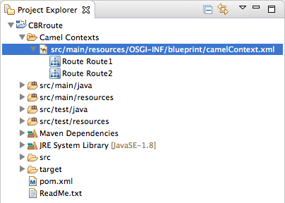
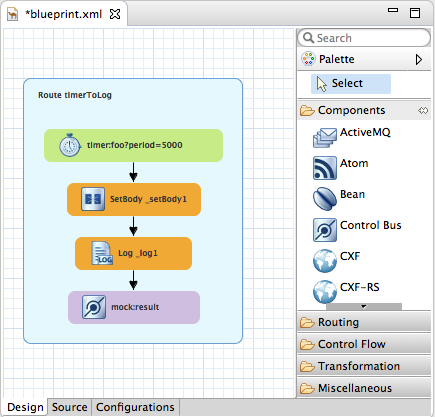
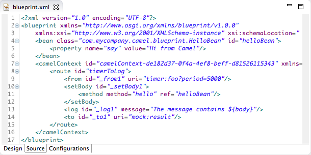
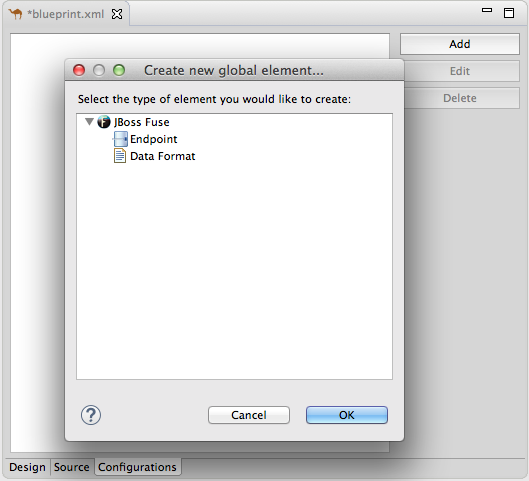

The Fuse Integration perspective, shown in Figure 1, provides access to all of the tooling for designing, monitoring, testing, and publishing your integration application.
![[Note]](imagesdb/note.png) | Note |
|---|---|
You can open perspective in two ways:
|
Fuse Integration perspective consists of nine main areas:
Project Explorer—displays all of the projects known to the tooling. You can view all of the artifacts that make up each project. Project Explorer also displays all of the routing context
.xml. files for a project under its Camel Contexts node. This makes it easy for you to find and open a routing context file included in a project. Under each routing context .xml file, it displays all routes defined within the context. For multiroute contexts, this makes it easy for you to switch your focus to a specific route on the canvas.The route editor—The route editor provides the main design-time tooling and consists of three views:
Design view—Displays a large grid area on which routes are constructed and a palette from which Enterprise Integration Patterns (EIPs) and Camel components are selected and then connected on the canvas to form routes.
The canvas is the route editor's workbench and where you do most of your work. It displays a graphical representation of one or more routes, which are made up of connected EIPs and Camel components (called nodes once they are placed on the canvas).
Selecting a node on the canvas populates the Properties editor with the properties that apply to the selected node, so you can edit them.
The Palette contains all of the patterns and Camel components needed to construct a route and groups them according to function—Components, Routing, Control Flow, Transformation, and Miscellaneous.
Source view—Displays the .xml configuration corresponding to the routes constructed on the route editor's canvas
You can edit the routing context in Source view as well as in Design view.
Configurations view—Provides an easy way to add shared configuration (global endpoints and data formats) to a multiroute, routing context. For details see Adding global endpoints and data formats.

Properties editor—displays the properties of the node selected on the canvas.
JMX Navigator—lists the JMX servers and the infrastructure they monitor. It enables you to browse JMX servers and the pocesses they are monitoring. It also identifies instances of Red Hat processes.
JMX Navigator drives all monitoring and testing activities in Fuse Integration perspective. It determines which routes are displayed in Diagram View, the Properties viewer, and Messages View. It is also provides menu commands for activating route tracing, adding and deleting JMS destinations, and starting and suspending routes. It is also the target for dragging and dropping messages onto a route.
By default, JMX Navigator shows all of the Java processes running on your local machine. You can add JMX servers as needed to view infrastructure on other machines.
Diagram view—displays a graphical tree representing the node selected in JMX Navigator. When you select a process, server, endpoint, or other node, Diagram view shows the selected node as the root with branches down to its children and grandchildren.
When you select a broker, Diagram View displays up to three children: connections, topics, and queues. It also shows configured connections and destinations as grandchildren.
When you select a route, Diagram view displays all of the nodes in the route and shows the different paths that messages can take through it. It also displays timing metrics for each processing step in the route when route tracing is enabled.
Messages view—lists the messages that have passed through the selected JMS destination or through Apache Camel endpoints when route tracing is enabled.
When a JMS destination is selected in JMX Navigator, the view lists all of the messages sitting in the destination.
When route tracing is enabled, Messages View lists all of the messages that passed through the nodes in the route since tracing started. You can configure Messages View to display only the data in which you are interested and in your preferred sequence.
When a message trace in Messages View is selected, its details (message body and all message headers) are displayed in the Properties viewer. In Diagram View, the step in the route associated with the selected message trace is also highlighted.
Servers view—displays a list of servers managed by the tooling. It displays their runtime status and provides controls for adding, starting and stopping them and for publishing projects to them.
Terminal view—Displays the command console of the connected container. You can control the container by entering commands in Terminal view.
Console view— displays the console output for recently executed actions.